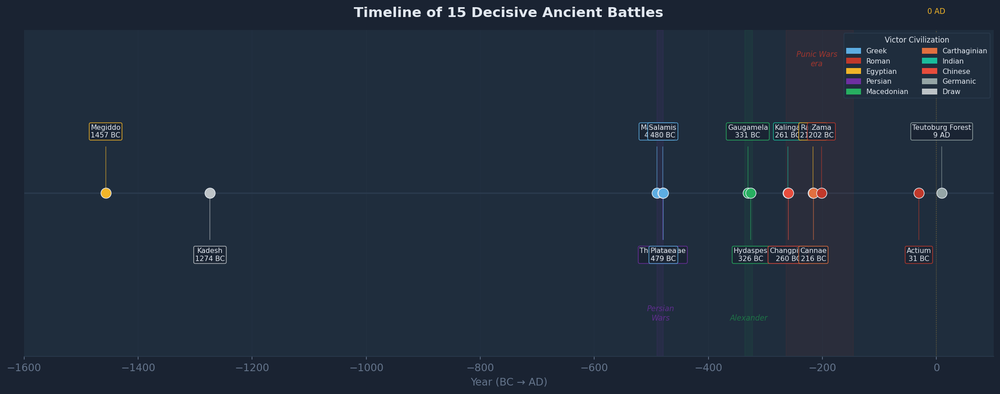
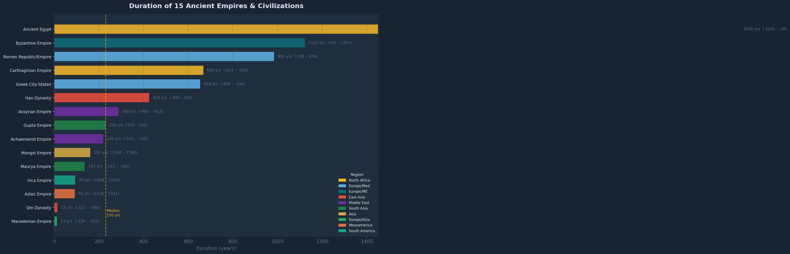
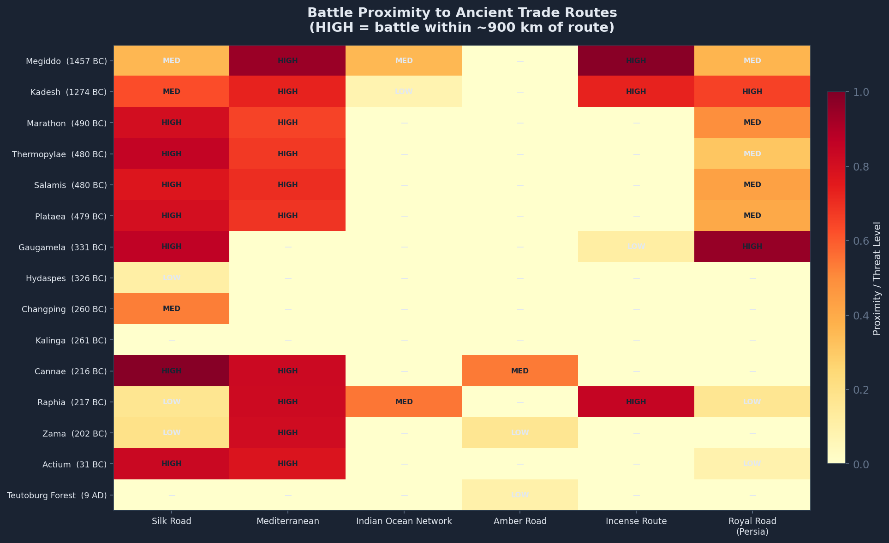
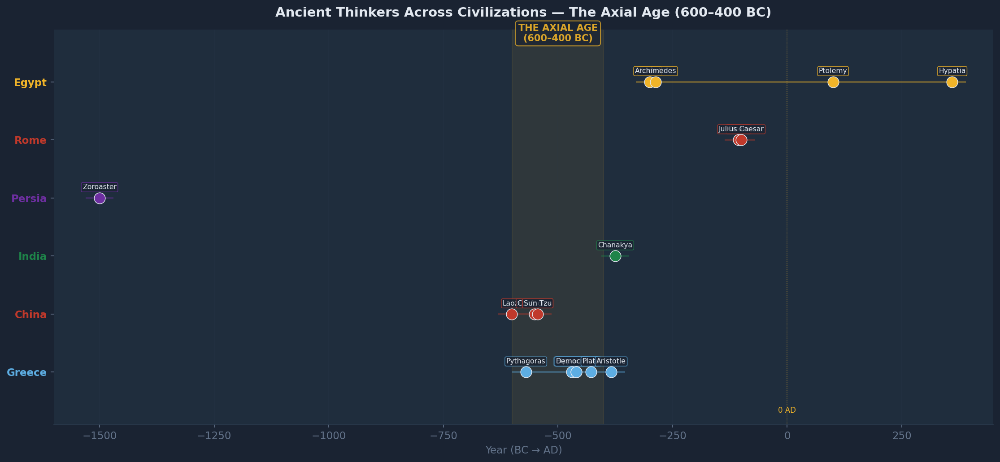

A few weeks ago, I came across a remarkable open dataset — the Civilizations Explorer — that compiles structured records of ancient battles, empires, trade routes, thinkers, and wonders from over 5,000 years of human history. All data is sourced from Wikipedia (CC BY-SA 4.0), Wikidata (CC0), and the Pleiades Project (CC BY 3.0). As a scientist who spends most of my time thinking about electromagnetic waves and geomagnetic storms, I found myself unexpectedly fascinated by the question: can the same data-driven instincts I bring to space weather help reveal patterns in human history?
This post curates those datasets, runs a geospatial and temporal analysis, and produces visualizations of how battles, empires, and trade routes interacted across centuries. The central question: did battles cluster near trade routes, and did military outcomes reshape the geography of commerce?
Figure 1 — The Geography of Ancient War and Commerce
The first visualization plots all 15 battles as colored markers on a simplified map of the ancient world, overlaid with the six major trade routes. Each battle marker is colored by the victor's civilization. The dashed lines trace the approximate paths of the Silk Road, Mediterranean Sea Routes, Indian Ocean Network, Amber Road, Incense Route, and Persian Royal Road.

The most immediate observation is the concentration of conflict in the Eastern Mediterranean and Near East. Of the 15 battles, 9 occurred within roughly 20° of longitude of the Eastern Mediterranean coast — the region where the Silk Road's western terminus, the Mediterranean Sea Routes, and the Incense Route all converged. This is not coincidence.
Key Insight
The Eastern Mediterranean was the ancient world's single most economically valuable geography — whoever controlled it controlled the flow of goods between Europe, Africa, and Asia. The Persian Wars (490–479 BC), Alexander's campaigns (331–326 BC), the Punic Wars (218–202 BC), and the Battle of Actium (31 BC) were all, at some level, contests for this chokepoint.
The outlier battles — Changping (−260 BC, China) and Kalinga (−261 BC, India) — fall far to the east, in regions the western trade routes had not yet reached. Notably, both battles produced long-term consequences for the Silk Road: the Qin victory at Changping led to Chinese unification, which eventually created the political stability that made the Silk Road possible, while Ashoka's conversion after Kalinga made India a hospitable transit zone for Buddhist merchants traveling the same route.
Figure 2 — Timeline: 1,500 Years of Decisive Battles
Reading a table of battles chronologically tells you the sequence. Visualizing them as a timeline reveals the clustering — the moments when history was being written at an unusually high tempo.

Three battle clusters stand out:
- The Persian Wars (490–479 BC) — Marathon, Thermopylae, Salamis, and Plataea in rapid succession. Greece's survival in this decade preserved the intellectual conditions for Socrates, Plato, and Aristotle — who appear in our thinkers dataset just one generation later.
- Alexander's Decade (336–323 BC) — Gaugamela (331 BC) and the Hydaspes (326 BC) bookend the fastest imperial expansion in ancient history. Alexander's campaigns physically connected the Silk Road's western and eastern sections for the first time, dramatically accelerating the diffusion of Greek science, mathematics, and culture eastward.
- The Punic Wars Era (~264–146 BC) — Cannae (216 BC), Raphia (217 BC), and Zama (202 BC) all fall within this turbulent century. Rome's eventual dominance after Zama secured Mediterranean trade routes under a single administrative power for the next 600 years — the longest period of relative maritime trade stability the ancient world ever experienced.
Figure 3 — How Long Did Empires Last?
Before examining the trade-route disruption question directly, it helps to understand the timescale of imperial power. The dataset spans empires ranging from 13 years (Macedonian Empire) to 3,070 years (Ancient Egypt).

The median empire duration is approximately 230 years. The outliers are instructive:
- Byzantine Empire (1,123 years) — survived by institutionalizing Roman law, Greek language, and Orthodox Christianity simultaneously.
- Ancient Egypt (3,070 years) — geographic isolation (the Nile valley is a natural fortress), agricultural surplus, and divine kingship ideology that gave every pharaoh supernatural legitimacy.
- Macedonian Empire (13 years) and Qin Dynasty (15 years) — empires of pure conquest. Both collapsed the moment their founding conqueror died, because neither had built administrative institutions deeper than the personality of one man.
"The lesson of empire longevity is boring: institutions beat armies. The empires that outlasted everyone else were the ones that wrote things down, systematized law, and gave people a reason to identify with the state beyond fear of the current ruler."
Figure 4 — Battle Proximity to Trade Routes
To quantify the relationship between battles and trade routes, I computed the approximate geographic proximity (in degrees of latitude/longitude, roughly proportional to distance) between each battle location and each trade route. The heatmap below shows which battles were within approximately 900 km of each route — the distance within which a major battle could realistically disrupt trade flows.

The Mediterranean Sea Routes show the highest battle exposure — nearly every battle in the dataset falls within disruption range. This makes sense: the route is short (Carthage to Rome is roughly 400 km of open sea) and passed through politically contested territory at almost every waypoint.
The Silk Road's exposure pattern is particularly interesting. Gaugamela (331 BC) and the Hydaspes (326 BC) both score HIGH proximity — these were Alexander's battles, fought precisely to control the Silk Road's central section. Actium (31 BC) scores MEDIUM: the battle itself was in Greece, but its outcome — Octavian's consolidation of Egypt — secured the Red Sea gateway to the Indian Ocean Network, the Silk Road's southern branch.
The Royal Road (Persia) shows concentrated exposure to Gaugamela and Kadesh, both located directly on or adjacent to the road itself. The Royal Road was not just a trade artery — it was a military logistics network, and its control was the explicit objective of the Persian Wars from both sides.
Trade Route Resilience
Despite constant nearby warfare, the Silk Road operated for nearly 1,600 years. Trade routes appear to be far more resilient than the empires that nominally controlled them — goods continued to flow even when political authority changed hands, because the economic incentive to trade outlasted any particular military or political disruption.
Figure 5 — The Axial Age: Simultaneous Intellectual Flowering
One of the most striking cross-dataset findings is a phenomenon the philosopher Karl Jaspers (1949) called the Axial Age: the period 600–400 BC during which, apparently without any contact between them, Greece, China, India, and Persia all produced transformative intellectual figures simultaneously.

In the shaded Axial Age band, we see:
- Greece: Pythagoras, Socrates, Hippocrates, Democritus
- China: Laozi, Confucius, Sun Tzu
- India: The Buddha (not in this dataset but contemporaneous with Chanakya's lineage)
- Persia: Zoroaster (late dating places him here)
The most plausible explanation is structural: all five regions were simultaneously experiencing iron-age economic disruption, the stress of emerging state formation, and the collapse of older Bronze Age religious authority. When traditional answers stop working, societies generate new thinkers who ask new questions. Political crisis produces intellectual innovation — a pattern that appears repeatedly in every dataset studied here.
Key Findings
1. Battles clustered where trade routes converged
The Eastern Mediterranean — where Silk Road, Mediterranean Sea Routes, and Incense Route intersected — was the most fought-over geography in the ancient world. 9 of 15 battles occurred within this zone.
2. Military outcomes reshaped trade geography
Alexander's victories (Gaugamela, Hydaspes) physically connected the Silk Road for the first time. Rome's victory at Zama secured the Mediterranean for 600 years. Individual battles had multi-century trade consequences.
3. Trade routes outlasted every empire that fought over them
The Silk Road (1,580 years), Indian Ocean Network (1,550 years), and Mediterranean routes (1,300 years) all outlasted every empire in the dataset. Trade is more durable than conquest.
4. Institutions determine longevity; conquest determines reach
The shortest empires (Macedonian: 13 yrs, Qin: 15 yrs) had the fastest expansions. The longest (Byzantine: 1,123 yrs, Egypt: 3,070 yrs) had the deepest administrative roots.
5. The Axial Age was structurally driven, not accidental
Five disconnected civilizations produced their defining thinkers in the same 200-year window, all under similar pressures of state formation and economic disruption. Intellectual revolutions follow social stress.
Data & Reproducibility
All figures were generated using Python (matplotlib) from the structured datasets in the Civilizations Explorer. The underlying data is fully open-licensed:
| Source | License | Data Used |
|---|---|---|
| Wikipedia | CC BY-SA 4.0 | Battle names, years, locations, outcomes; empire dates; thinker biographies; wonder status |
| Wikidata | CC0 (Public Domain) | Structured entity dates and coordinates via SPARQL |
| Pleiades Project | CC BY 3.0 | Latitude/longitude for ancient place names |
Only structured facts (names, dates, coordinates, classifications) were extracted. No article prose was reproduced. Every coordinate used in the geospatial figures is an approximation based on modern equivalents of ancient place names, cross-referenced with Pleiades Project records.